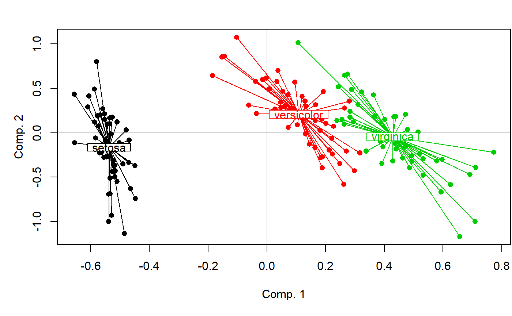

pairwise.factorfit.RdPerforms pairwise comparisons between group levels with corrections for multiple testing. Tests are computed using factorfit.
pairwise.factorfit(ord, fact, xax = 1, yax = 2, nperm = 999, p.method = "fdr", ...)
| ord | any multivariate analysis handled by |
|---|---|
| fact | grouping factor. |
| xax | first axis of the factorial map. |
| yax | second axis of the factorial map. |
| nperm | number of permutations. |
| p.method | method for p-values correction. See help of |
| … | optional further agruments to |
a character string giving the name of the test.
a character string giving the name(s) of the data and the number of permutations.
table of results.
method for p-values correction.
#> #> ***FACTORS: #> #> Centroids: #> PC1 PC2 #> Speciessetosa -0.5379 -0.1622 #> Speciesversicolor 0.1085 0.2086 #> Speciesvirginica 0.4293 -0.0464 #> #> Goodness of fit: #> r2 Pr(>r) #> Species 0.5338 0.001 *** #> --- #> Signif. codes: 0 '***' 0.001 '**' 0.01 '*' 0.05 '.' 0.1 ' ' 1 #> Permutation: free #> Number of permutations: 999 #> #># Pairwise comparisons # (not enough permutations here but faster to run) pairwise.factorfit(PCA,iris$Species,nperm=49)#> #> Pairwise comparisons using factor fitting to an ordination #> #> data: PCA by iris$Species #> 49 permutations #> #> setosa versicolor #> versicolor 0.02 - #> virginica 0.02 0.02 #> #> P value adjustment method: fdr